Bis hierhin sieht unsere App irgendwie noch so gar nicht wie eine App
aus. Sondern mehr wie eine normale Webseite. Schlimmer noch: Wie ein
ganz banales „Hallo, Welt!”. An dieser Stelle wollen wir daher das
Grundlayout der App erstellen, so dass das wir hinterher folgendes
Ergebnis sehen:
Das Layout der App, wenn wir hier fertig sind
Der angezeigte Inhalt ist natürlich nur ein Platzhalter und wird überhaupt
noch nicht in irgend einer Weise dynamisch erzeugt. Wir können ihn deshalb
einfach direkt in die HTML-Seite schreiben, damit wir beim Erstellen der
Stylesheets schon etwas sehen.
Entferne nun also das <h1> aus der
src/index.html und ersetze es durch folgenden
Code. Alle anderen Zeilen bleiben unverändert.
<!-- ========================= -->
<!-- Grundgerüst der Anwendung -->
<!-- ========================= -->
<section id="app">
<!-- Topbar -->
<header>
<!-- Obere Zeile (fester Inhalt) -->
<div class="top left">
<div class="item inactive">
<b>
Beispiel einer Browser App: My Songbook
</b>
</div>
</div>
<div class="top right">
<div class="item">
<a href="https://github.com/DennisSchulmeister/dhbwka-wwi-webprog-my-songbook" target="_blank">GitHub</a>
</div>
<div class="item">
<a href="https://www.wpvs.de/browser-app/" target="_blank">Programmieranleitung</a>
</div>
</div>
<!-- Untere Zeile (dynamisch je nach View) -->
<div class="bottom left">
<div class="item">
Song hinzufügen
</div>
<div class="item">
Sortierung nach Titel
</div>
</div>
<div class="bottom right">
<input placeholder="Suchen" />
</div>
</header>
<!-- Hauptbereich (dynamisch je nach View) -->
<main>
<div class="padding">
Under Construction
</div>
</main>
</section>
Denkt man sich den Dummy-Inhalt weg, lässt sich daran auch schon folgender Aufbau
der Seite erkennen:
<section id="app">
<header>
<!-- Obere Zeile (fester Inhalt) -->
<div class="top left">
… Inhalt in allen Views identisch …
</div>
<div class="top right">
… Inhalt in allen Views identisch …
</div>
<!-- Untere Zeile (dynamisch je nach View) -->
<div class="bottom left">
… Inhalt je nach View …
</div>
<div class="bottom right">
… Inhalt je nach View …
</div>
</header>
<!-- Hauptbereich (dynamisch je nach View) -->
<main>
… Inhalt je nach View …
</main>
</section>
Diese Inhalte müssen wir nun mit den zuvor angelegten Stylesheets in Form bringen,
da die eingebauten Layoutregeln des Browsers natürlich nicht wie von Geisterhand
das obige Bild herbeizaubern werden. Doch zuvor musst du dir von GitHub folgende
drei Bilder herunterladen:
Anschließend lege eine neue Datei namens src/theme.css und
folgendem Inhalt an. Sie enthält häufig benötigte
CSS-Variablen,
die wir an anderer Stelle immer wieder benötigen werden:
Damit haben wir erst einmal alle Dateien beisammen. Die Verzeichnisstruktur sollte jetzt
wie in der nächsten Abbildung aussehen:
Verzeichnisstruktur der Webanwendung an dieser Stelle
Damit das neue Stylesheet wirksam wird, muss es erst noch importiert werden.
Ändere deshalb den Import des alten Stylesheets in der src/index.js
zu folgenden zwei Zeilen ab. Achte dabei aber darauf, wirklich erst die Datei
./index.css und dann die Datei ./theme.css
zu importieren:
import stylesheet from "./index.css";
import theme from "./theme.css";
Der Inhalt der Datei src/index.css ändert sich nun komplett
zu folgenden Zeilen. Zunächst ein paar allgemeine Definitionen:
/*
* Dieses Stylesheet enthält nur allgemeine Anweisungen, die sich auf die
* gesamte App auswirken. Hier dürfen keine Änderungen vorgenommen werden,
* die sich nur auf bestimmte Bereiche der Anwendung auswirken sollen.
*
* Damit @import funktioniert, muss die Anweisung vor allen anderen
* CSS-Anweisungen stehen. Dieses Stylesheet muss daher auch vor allen
* anderen importiert werden.
*/
@import url('https://fonts.googleapis.com/css?family=Roboto');
html, body {
padding: 0;
margin: 0;
height: 100%;
}
body {
font-family: 'Roboto', sans-serif;
font-size: 11pt;
line-height: 1.6;
color: var(--font-color);
}
Dann ein paar Anpassungen der Schriftgröße je nach Bildschirmauflösung:
Und zum Schluss wie immer ein Media Query, um auf großen Bildschirmen
die Darstellung zu optimieren, sowie ein paar nützliche Helferlein:
/*
* Flächendeckender Seitenhintergrund auf großen Bildschirmen
*/
@media (min-width: 85em) {
/* Hintergrundbild hinter dem Hauptbereich der App */
html {
/* https://pixabay.com/de/computer-notebook-kaffee-820281/ */
background-image: url(background.jpg);
background-attachment: fixed;
background-size: cover;
background-position: center;
}
/* Hauptbereich der App vergrößern */
body {
display: flex;
align-items: stretch;
justify-content: center;
}
body > * {
flex: 1;
}
}
/*
* Häufig benötigte Hilfsklassen
*/
.hidden {
display: none;
}
.padding {
padding: 0.5rem;
}
Wie du (hoffentlich) siehst, werden hier wirklich nur ganz allgemeine Dinge
geregelt, die sich auf die gesamte App auswirken. Spezifische Anpassungen
für einen einzelnen Bereich werden stattdessen in getrennten Stylesheets
vorgenommen, wobei es im Grunde genommen je JavaScript-Datei eine gleichnamige
CSS-Datei gibt. Die Datei
src/app.css beginnt daher wie immer mit ein paar
allgemeinen Definitionen:
/*
* Dieses Stylesheet darf nur Selektoren beinhalten, die mit #app beginnen.
* Denn wir wollen nicht, dass hier Eigenschaften aus anderen Bereichen der
* Anwendung überschrieben werden.
*/
#app {
background-color: white;
flex: 1;
}
Darauf folgt eine große Zahl an Regeln zur Gestaltung des Kopfbereichs.
Auch sie fangen alle mit #app an, um ihre Gültigkeit
zu begrenzen:
Und zum Schluß wie immer die Anpassung an große Bildschirme. Die Angabe
(min-width: 85em) in der fünften Zeile muss
dabei in Einklang mit dem Media Query in der src/index.css
stehen, damit die Darstellung passt:
/*
* Anpassung an große Bildschirme, sobald in der index.css das große
* Hintergrundbild eingeschaltet wird
*/
@media screen and (min-width: 85em) {
/* Rahmen um den Hauptbereich zeichnen */
#app {
max-width: 80em;
margin-top: 2em;
margin-bottom: 2em;
border: 1px solid rgba(32,32,32, 0.2);
box-shadow: 1px 1px 3px rgba(0,0,0, 0.1);
}
/* Topbar- und Toolbar-Inhalte nebeneinander */
#app header {
display: grid;
grid-template-columns: auto 20em;
}
#app header .top {
grid-row: 1;
}
#app header .bottom {
grid-row: 2;
}
#app header .left {
grid-column: 1;
display: flex;
justify-content: flex-start;
}
#app header .right{
grid-column: 2;
display: flex;
justify-content: flex-start;
background-color: var(--header-active-background-color);
color: var(--header-active-font-color);
}
#app header .item {
width: auto;
}
/* Nur den Bereich unterhalb der Toolbar scrollen */
#app {
display: flex;
flex-direction: column;
}
#app > main {
flex: 1;
overflow: auto;
}
}
Und das war es dann auch schon. Zugegeben war das jetzt zwar viel Copy & Paste.
Auf dieser Grundlage können wir der App im nächsten Schritt nun aber ein wenig Leben einhauchen.
Rein visuell sieht unsere Seite jetzt schon viel mehr wie eine App aus. Man kann aber noch
nichts anklicken, weshalb es sich im Grunde genommen immer noch um eine statische HTML-Seite
handelt. An dieser Stelle wollen wir daher das Grundgerüst etwas erweitern und eine einfache
Navigation ermöglichen. Dadurch soll es möglich sein, zwischen der Übersichtsseite (die wir
an dieser Stelle immer noch nicht mit Inhalt füllen werden) und der späteren Detailseite
umzuschalten, so dass wir dann endgültig von einer echten Browser App sprechen können. Denn
im Gegensatz zu einer serverseitigen Webanwendung soll das hin und her Schalten zwischen den
Seiten komplett im Browser geschehen, ohne hierfür eine neue Seite vom Server anzufordern.
Umstrukturierung des HTML-Codes
Im ersten Schritt müssen wir die Datei src/index.html so umbauen,
dass jeder Bereich der App eine eigene <section> bekommt,
die wir über eine eindeutige Id adressieren können. Allerdings sollen diese neuen Bereiche
nicht sichtbar sein. Die CSS-Klasse hidden stellt deshalb sicher,
dass wirklich nur die erste <section id="app"> mit dem
Anwendungsrahmen und sonst nichts angezeigt wird.
Anschließend können wir den Dummy-Inhalt aus dem Grundgerüst wieder entfernen, so dass
davon nur folgende Zeilen übrig bleiben. Den festen Inhalt der Topbar, der wirklich immer zu
sehen sein soll, behalten wir hier natürlich bei. Ebenso alle anderen Zeilen der HTML-Datei.
<!-- ========================= -->
<!-- Grundgerüst der Anwendung -->
<!-- ========================= -->
<section id="app">
<!-- Topbar -->
<header>
<!-- Obere Zeile (fester Inhalt) -->
<div class="top left">
<div class="item inactive">
<b>
Beispiel einer Browser App: My Songbook
</b>
</div>
</div>
<div class="top right">
<div class="item">
<a href="https://github.com/DennisSchulmeister/dhbwka-wwi-webprog-my-songbook" target="_blank">GitHub</a>
</div>
<div class="item">
<a href="https://www.wpvs.de/browser-app/" target="_blank">Programmieranleitung</a>
</div>
</div>
<!-- Untere Zeile (dynamisch je nach View) -->
</header>
<!-- Hauptbereich (dynamisch je nach View) -->
<main>
</main>
</section>
Den eben entfernten HTML-Code bauen wir stattdessen weiter unten in die <section>
für die Übersichtsseite wieder ein.¹
¹
Die CSS-Klasse bottom für die beiden <div>
in der Topbar haben wir hier absicshtlich weggelassen. Doch dazu später mehr.
Und auch die Detailseite gestalten wir ähnlich, da sie zu diesem Zeitpunkt natürlich auch noch keinen
wirklichen Inhalt besitzt. Immerhin bekommt sie in der Topbar jedoch bereits einen Eintrag, mit dem der
Anwender zurück auf die Übersichtsseite gelangen soll.
<!-- ================================== -->
<!-- View: Song anzeigen und bearbeiten -->
<!-- ================================== -->
<section id="song-display-edit" class="hidden">
<!-- Topbar -->
<header>
<div class="left">
<!-- Leer -->
</div>
<div class="right">
<div class="item overview">
Zurück zur Übersicht
</div>
</div>
</header>
<!-- Hauptbereich -->
<main>
<div class="padding">
Song anzeigen/bearbeiten
</div>
</main>
</section>
Austausch der sichtbaren Inhalte mit JavaScript
Mit diesen Änderungen nun an Ort und Stelle können wir uns an die Ausprogrammierung der
App-Klasse innerhalb der Datei src/app.js
machen. Denn sie soll für die Navigation innerhalb der App zuständig sein und zwischen den
verschiedenen Ansichten umschalten. Die eigentliche Arbeit macht dabei die folgende, neue
Methode, wobei der Unterstrich am Anfang des Namens ausdrückt, dass sie nur innerhalb der
Klasse selbst aufgerufen werden sollte. Erzwungen wird das von JavaScript allerdings nicht.
/**
* Auswechseln des sichtbaren Inhalts der App. Hierfür muss der Methode
* ein Objekt mit folgendem Aufbau übergeben werden:
*
* {
className: "CSS-Klassenname",
* topbar: [DOM Element, DOM Element, DOM Element, ...],
* main: [DOM Element, DOM Element, DOM Element, ...],
* }
*
* Beide Attribute (topbar und main) sind optional, was dazu führt, dass
* im jeweiligen Bereich einfach nichts angezeigt wird. Werden sie jedoch
* mitgegeben, müssen sie mit forEach(element => { … }) iteriert werden
* können, um ihren Inhalt in den DOM-Baum zu integrieren.
*
* Wichtig ist, dass die übergebenen Elemente noch an keiner Stelle im
* DOM vorhanden sein dürfen. Werden die Elemente in der index.html
* als Vorlage definiert, muss hier deshalb eine Kopie anstelle der
* Elemente selbst übergeben werden!
*
* @param {Object} content Objekt mit den anzuzeigenden DOM-Elementen
*/
_switchVisibleContent(content) {
// <header> und <main> des HTML-Grundgerüsts ermitteln
let app = document.querySelector("#app");
let header = document.querySelector("#app > header");
let main = document.querySelector("#app > main");
// Zuvor angezeigte Inhalte entfernen
// Bei der Topbar nur die untere Zeile, im Hauptbereich alles!
app.className = "";
header.querySelectorAll(".bottom").forEach(e => e.parentNode.removeChild(e));
main.innerHTML = "";
// CSS-Klasse übernehmen, um die viewspezifischen CSS-Regeln zu aktivieren
if (content && content.className) {
app.className = content.className;
}
// Neue Inhalte der Topbar einfügen
if (content && content.topbar) {
content.topbar.forEach(element => {
element.classList.add("bottom");
header.appendChild(element);
});
}
// Neue Inhalte des Hauptbereichs einfügen
if (content && content.main) {
content.main.forEach(element => {
main.appendChild(element);
});
}
}
Der Quellcode ist im Grunde genommen nicht sehr kompliziert. Dennoch gehen wir ihn an dieser
Stelle kurz durch, um sicherzustellen, dass du ihn auch wirklich verstehst:
Zunächst greift die Methode auf das DOM zu, um sich die
<section id="app"> sowie die darin enthaltenen
<header>- und
<main>-Elemente zu besorgen.
Anschließend werden die zuvor sichtbaren Inhalte verworfen. Im Falle der
Topbar mit einer forEach()-Schleife, die nur
die Elemente der unteren Zeile erwischt. Im Hauptbereich wird stattdessen
das innerHTML-Attribut überschrieben, was
seinen kompletten Inhalt löscht.
Dann wird mit einer if-Abfrage gebprüft, ob
ob das content-Objekt ein Attribut mit dem
Namen classList enthält. Falls ja wird die
CSS-Klasse des <section id="app">
entsprechend abgeändert, damit etwaige CSS-Regeln, die sich auf
diese Klasse beziehen, wirksam werden können.
Danach wird geprüft, ob ein neuer Inhalt für die Topbar übergeben wurde.
Falls ja, wird in einer Schleife jedem dieser Elemente die CSS-Klasse
bottom hinzugefügt, um sie in der untere Zeile
der Topbar zu verankern. Gleichzeitig werden sie an den
<header> innerhalb von
<section id="app"> angehängt.
Dann erfolgt mit einer ähnlichen Abfrage eine Prüfung für den Hauptbereich
der App, nur dass den Elementen hier keine zusätzliche CSS-Klasse mitgegeben
werden muss.
Mit dieser Methode können wir nun den angezeigten Inhalt der App variieren. Wirklich
anwenderfreundlich ist sie aber noch nicht, da wir ihr, um eine neue View anzuzeigen,
genau die hierfür notwendigen DOM-Elemente mitgegeben müssen. Besser wäre es jedoch,
wenn wir eine bestimmte View einfach aufrufen könnten, ohne genau zu wissen, wie sie
letztlich aufgebaut ist. Wir benötigen daher für jede View eine weitere Methode, die
genau diesen Zweck erfüllt. Doch hierfür müssen wir uns erst noch überlegen, wie wir
den restlichen Quellcode der App weiter strukturieren sollen.
Eine Klasse je Bildschirmseite
Natürlich könnten wir die komplette Anwendungslogik einfach in der Datei src/app.js
und der Klasse App ausprogrammieren. Dem Computer wäre das ziemlich gleich.
Allerdings wissen wir, dass die beiden Views mit der Übersicht und zur Anzeige eines Songtexts nicht
wirklich viel gemeinsam haben. Alles in eine Klasse zu packen wäre daher ziemlich unübersichtlich.
Das alte Sprichwort „teile und herrsche” liefert stattdessen viel bessere Ergebnisse, da es uns an die
SOLID-Kriterien
und hier insbesondere an das Single-Responsibility-Prinzip erinnert. Es liegt deshalb nahe, für
jede Bildschirmseite eine eigene Klasse vorzusehen. Und für jede Klasse dementsprechend eine
eigene JavaScript-Datei und ein eigenes Stylesheet, die wir, um die Übersichtlichkeit noch
weiter zu erhöhen, jeweils in ein eigenes Verzeichnis packen.
Bevor wir also weiter programmieren, lege zunächst folgende Dateistruktur an. Die Dateien
können dabei zunächst noch leer bleiben:
src/song-overview/song-overview.js: Klasse SongOverview für die Übersichtsseite
src/song-overview/song-overview.css: Stylesheet für die Übersichtsseite
src/song-display-edit/song-display-edit.js: Klasse SongDisplayEdit für die Detailseite
src/song-display-edit/song-display-edit.css: Stylesheet für die Detailseite
Das Ergebnis sollte dann so aussehen:
Erweiterte Verzeichnisstruktur für die Übersichts- und die Detailseite
Die beiden Stylesheets sind am einfachsten. Hier wollen wir zunächst nur etwas Dummy-Inhalt
einbauen, damit wir später sehen, ob sie auch wirklich ausgewertet werden. Füge daher in die
Datei src/song-overview/song-overview.css folgende Zeile ein:
/*
* Dieses Stylesheet darf nur Selektoren beinhalten, die mit .song-overview
* beginnen. Denn wir wollen nicht, dass hier Eigenschaften aus anderen Bereichen
* der Anwendung überschrieben werden.
*/
.song-overview main {
color: orangered !important;
}
In die src/song-display-edit/song-display-edit.css füge folgende Zeilen:
/*
* Dieses Stylesheet darf nur Selektoren beinhalten, die mit .song-display-edit
* beginnen. Denn wir wollen nicht, dass hier Eigenschaften aus anderen Bereichen
* der Anwendung überschrieben werden.
*/
.song-display-edit main {
color: orchid !important;
}
Bei den beiden Klassen wird es hingegen schon interessanter, da wir uns noch gar
keine Gedanken darüber gemacht haben, welche Methoden sie besitzen sollen und
wann diesie aufgerufen werden. Letztlich gibt es auch gar keine universelle Lösung
dafür, in der Praxis hat sich aber ganz unabhängig von der Art der Anwendung oder
der verwendeten UI-Technologie folgende, grundlegende Struktur bewährt:
Jedes Mal, wenn eine View aufgerufen wird, wird ein neues Objekt der dazugehörigen
Klasse erzeugt. Das Objekt bleibt dabei so lange aktiv, wie die View sichtbar ist.
Wird von einer View auf dieselbe View nur mit anderen Daten gewechselt (zum Beispiel
von der Detailseite eines Songs zur Detailseite eines anderen Songs), wird hierfür
ebenfalls ein neues Objekt erzeugt.
Denn dies ermöglicht es, die Klassen einfach zu halten und die für die Ermittlung der
anzuzeigenden Daten benötigten Informationen wie die Song-ID einfach dem Konstruktor
zu übergeben.
Bevor eine neue View aufgerufen wird, wird die Methode onShow()
des jeweiligen Objekts aufgerufen.
Davor wird jedoch erst die Methode onLeave() der aktuell sichtbaren
View aufgerufen, um ihr die Möglichkeit zu geben, Aufräumarbeiten durchzuführen oder den
Seitenwechsel zu unterbinden.
Eine Methode mit dem Namen getTitle() gibt den Titel der aktuellen
View zurück, um ihn in der Titelzeile des Browserfensters anzuzeigen.
Sobald eine View verlassen wurde, kann das dazugehörige Objekt abgeräumt werden.
Damit haben wir einen klaren Lebenszyklus definiert, der genau vorschreibt, zu welchem Zeitpunkt
neue Objekte entstehen, welche Methoden dementsprechend aufgerufen werden und wann die Objekte
wieder verschwinden. Außerdem haben wir eine Möglichkeit geschaffen, besondere Fälle wie das
Vorliegen nicht gespeicherter Daten abzufangen, bei denen wir den Anwender erst fragen müssen,
ob er seine Änderungen sichern will, oder wir den Aufruf der Folgeseite ganz einfach unterbinden.
Die Datei src/song-overview/song-overview.js soll somit folgenden Inhalt besitzen:
"use strict";
import stylesheet from "./song-overview.css";
/**
* View mit der Übersicht der vorhandenen Songs.
*/
class SongOverview {
/**
* Konstruktor.
* @param {Objekt} app Zentrales App-Objekt der Anwendung
*/
constructor(app) {
this._app = app;
}
/**
* Von der Klasse App aufgerufene Methode, um die Seite anzuzeigen. Die
* Methode gibt daher ein passendes Objekt zurück, das an die Methode
* _switchVisibleContent() der Klasse App übergeben werden kann, um ihr
* die darzustellenden DOM-Elemente mitzuteilen.
*
* @return {Object} Darzustellende DOM-Elemente gemäß Beschreibung der
* Methode App._switchVisibleContent()
*/
onShow() {
// Machen wir gleich
}
/**
* Von der Klasse App aufgerufene Methode, um festzustellen, ob der Wechsel
* auf eine neue Seite erlaubt ist. Wird hier true zurückgegeben, wird der
* Seitenwechsel ausgeführt.
*
* @param {Function} goon Callback, um den Seitenwechsel zu einem späteren
* Zeitpunkt fortzuführen, falls wir hier false zurückgeben
* @return {Boolean} true, wenn der Seitenwechsel erlaubt ist, sonst false
*/
onLeave(goon) {
return true;
}
/**
* @return {String} Titel für die Titelzeile des Browsers
*/
get title() {
return "Übersicht";
}
}
export default SongOverview;
Die Datei src/song-display-edit/song-display-edit.js soll hingegen
folgenden Inhalt besitzen:
"use strict";
import stylesheet from "./song-display-edit.css";
/**
* View zur Anzeige oder zum Bearbeiten eines Songs.
*/
class SongDisplayEdit {
/**
* Konstruktor.
*
* @param {Objekt} app Zentrales App-Objekt der Anwendung
* @param {String} id ID des darzustellenden Songs
* @param {String} mode "new", "display" oder "edit"
*/
constructor(app, id, mode) {
this._app = app;
this._id = id;
this._mode = mode;
}
/**
* Von der Klasse App aufgerufene Methode, um die Seite anzuzeigen. Die
* Methode gibt daher ein passendes Objekt zurück, das an die Methode
* _switchVisibleContent() der Klasse App übergeben werden kann, um ihr
* die darzustellenden DOM-Elemente mitzuteilen.
*
* @return {Object} Darzustellende DOM-Elemente gemäß Beschreibung der
* Methode App._switchVisibleContent()
*/
onShow() {
// Machen wir gleich
}
/**
* Von der Klasse App aufgerufene Methode, um festzustellen, ob der Wechsel
* auf eine neue Seite erlaubt ist. Wird hier true zurückgegeben, wird der
* Seitenwechsel ausgeführt.
*
* @param {Function} goon Callback, um den Seitenwechsel zu einem späteren
* Zeitpunkt fortzuführen, falls wir hier false zurückgeben
* @return {Boolean} true, wenn der Seitenwechsel erlaubt ist, sonst false
*/
onLeave(goon) {
return true;
}
/**
* @return {String} Titel für die Titelzeile des Browsers
*/
get title() {
switch (this._mode) {
case "new":
return "Song hinzufügen";
case "edit":
return "Song bearbeiten";
default:
return "Song anzeigen";
}
}
}
export default SongDisplayEdit;
Weitere Methoden für die Klasse App
Da der Vertrag mit dem View-Klassen nun klar ist, besitzen wir alle Informationen, um die
Klasse App zu Ende zu programmieren. Füge deshalb über der Methode
_switchVisibleContent() eine neue Methode mit dem Namen
_switchVisibleView() ein, die sie aufruft und hierfür ein
View-Objekt entgegen nimmt:
/**
* Hilfsklasse zum Umschalten auf eine neue Seite. Sie ruft zunächst die
* Methode onLeave() der gerade sichtbaren View auf und prüft damit, ob
* die View verlassen werden kann. Falls ja ruft sie die Methode onShow()
* der neuen View auf und übergibt das Ergebnis an die eigene Methode
* _switchVisibleContent(), um den sichtbaren Inhalt der Seite auszutauschen.
*
* @param {Object} view View-Objekt mit einer onShow()-Methode
* @return {Boolean} Flag, ob die neue Seite aufgerufen werden konnte
*/
_switchVisibleView(view) {
// Callback, mit dem die noch sichtbare View den Seitenwechsel zu einem
// späteren Zeitpunkt fortführen kann, wenn sie in der Methode onLeave()
// false zurückliefert. Dadurch erhält sie die Möglichkeit, den Anwender
// zum Beispiel zu fragen, ob er ungesicherte Daten speichern will,
// bevor er die Seite verlässt.
let goon = () => this._switchVisibleView(view);
// Aktuelle View fragen, ob eine neue View aufgerufen werden darf
if (this._currentView && !this._currentView.onLeave(goon)) {
return false;
}
// Alles klar, aktuelle View nun wechseln
document.title = `${this._title} – ${view.title}`;
this._currentView = view;
this._switchVisibleContent(view.onShow());
return true;
}
/**
* …
*/
_switchVisibleContent(content) {
…
}
Die zwei Instanzattribute this._currentView und
this._title müssen hierfür noch im Konstruktor
definiert werden:
Und damit das Ganze einfach zu verwenden ist, legen wir nun für jede View eine
eigene, für die öffentliche Verwendung freigebene Methode an, mit der sie überall
in der App aufgerufen werden kann. Die Methode start()
passen wir bei der Gelegenheit dann auch gleich noch an, damit beim Aufruf der App
immer die Überssichtsseite geladen wird:
…
import SongDisplayEdit from "./song-display-edit/song-display-edit.js";
import SongOverview from "./song-overview/song-overview.js";
/**
* …
*/
class App {
…
/**
* Ab hier beginnt die Anwendung zu laufen.
*/
start() {
this.showSongOverview();
}
/**
* Aufruf der Übersichtsseite der vorhandenen Songs.
* @return {Boolean} Flag, ob die neue Seite aufgerufen werden konnte
*/
showSongOverview() {
let view = new SongOverview(this);
this._switchVisibleView(view);
}
/**
* Aufruf der Detailseite zur Anzeige oder zum Bearbeiten eines Songs.
*
* @param {String} id Song-ID
* @param {String} mode "new", "display" oder "edit"
* @return {Boolean} Flag, ob die neue Seite aufgerufen werden konnte
*/
showSongDisplayEdit(id, mode) {
let view = new SongDisplayEdit(this, id, mode);
this._switchVisibleView(view);
}
/**
* …
*/
_switchVisibleView(view) {
…
}
}
Ausprogrammieren der onShow()-Methoden
Eine winzige Kleinigkeit fehlt jetzt aber noch, bevor das Ganze auch wirklich funktioniert:
Wir müssen noch die Methode onShow() unserer beiden View-Klassen
ausprogrammieren. Denn noch übergeben wir dem App-Objekt keine
DOM-Elemente zum Anzeigen und wir registrieren auch noch keine Event Handler, mit denen
der Anwender zwischen den Seiten umherschalten könnte.
Öffne daher noch einmal die Datei src/song-overview/song-overview.js
und ersetze die onShow()-Methode durch die nun folgende Version:
Beide Methoden sind prinzipiell gleich aufgebaut. Um sie zu verstehen müssen wir allerdings
erst einen Bogen zurück zum Anfang machen. Dort haben wir nämlich den HTML-Code der Datei
src/index.html etwas umgeräumt und zwei
<section>-Elemente für die beiden Unterseiten angelegt.
Auf diese Elemente greifen wir nun zu, um die anzuzeigenden HTML-Elemente aus dem Document
Object Model auszulesen. Allerdings erzeugen wir durch Aufruf der Methode
cloneNode(true) eine tiefe Kopie der ausgelesenen Elemente, da der
Kommentar vor der Methode App._switchVisibleContent() eindeutig
besagt, dass ihr keine Elemente übergeben werden dürfen, die sich bereits im DOM-Baum der
HTML-Seite befinden.
Mit diesen Elementen bauen wir dann das content-Objekt auf, welches
die Methode App._switchVisibleContent() von uns erwartet. Daraufhin
suchen wir uns in der Topbar jeweils ein Element, mit dem der Anwender zwischen den Seiten
umschalten kann und registrieren einen Click-Event-Handler darauf. In der entsprechenden
Handler-Funktion rufen wir daher die jeweils richtige show…()-Methode
des App-Objekts auf, um die Seite tatsächlich zu wechseln.
Und am Ende geben wir die content-Struktur zurück, damit die Methode
App._switchVisibleView(), von der wir aufgerufen werden, sie an die
Methode App._switchVisibleContent() übergeben kann.
Wenn du alles richtig gemacht hast, solltest du nun zwischen den beiden Seiten umherschalten
können. Dabei sollte dann auch aufgrund der unterschiedlichen Stylesheets die Schriftfarbe von
orange auf lila wechseln, wie in der folgenden Animation dargestellt.
All der Mühen Lohn: Eine funktionierende Navigation innerhalb der App
Zugegeben, das war schon eine ganze Menge Code, der da eben zusammenpassen musste, bevor wir
wirklich zwischen den beiden Seiten hin und her schalten konnten. Doch damit hast du nun eine
vollständige Grundstruktur zur Verfügung, die im Grunde genommen auf jede Art von Anwendung
ausgerollt werden kann. Du musst nur die beiden Klassen für die Songübersicht und die Songdetails
durch eigene Klassen ersetzen. Ein paar Nachteile hat die bisherige Lösung aber noch, weshalb
wir sie an dieser Stelle noch etwas verfeinern wollen:
Die Views unserer App besitzen keine eindeutigen URLs und können daher nur per JavaScript
aufgerufen werden. Dadurch kann eine View (zum Beispiel für einen bestimmten Song) nicht
durch Eingabe der richtigen Adresse im Browser direkt aufgerufen werden.
Auch können wir keine einfachen <a>-Elemente innerhalb des
HTML-Codes verwenden, um einen Link auf eine andere View zu platzieren. Wir müssen immer
Event-Handler-Funktionen schreiben und den Seitenwechsel mit JavaScript durchführen.
Der Zurück-Button des Browsers sowie ganz allgemein die Nutzung des Browserverlaufs
wird nicht unterstützt.
Die Lösung all dieser Probleme hört auf den Namen
HTML5 History API.
Doch anstatt jetzt uns jetzt selbst damit herumzuschlagen (die Details richtig hinzubekommen ist
tatsächlich nicht ganz einfach), wollen wir auf eine Library zurückgreifen, die das alles viel
besser kann. Wir wollen einen „Single Page Router” verwenden, der es uns ganz einfach ermöglicht,
eine URL-Struktur für unsere App zu definieren und dabei festzulegen, was beim Aufruf welcher URL
passieren soll. Den Grundstock dafür haben wir bereits im letzten Teilkapitel gelegt. Jetzt geht
es nur noch darum, die ganze Sache ein wenig zu optimieren.
Installation von Navigo
Die Library, die wir hier verwenden wollen, heißt Navigo.
Sie implementiert einen einfachen Single Page Router, der im Gegensatz zu vielen ähnlichen
Bibliotheken ganz ohne fremde Abhängigkeiten auskommt und daher in nahezu jede beliebige
Webanwendung integriert werden kann. Und wie das
README auf GitHub
andeutet, scheint sie relativ einfach nutzbar zu sein. Grund genug also mal wieder das gute alte
Terminal anzuschmeißen, mit einem beherzten cd "Verzeichnisname" in unser
Projektverzeichnis zu wechseln und die Library mit folgendem Befehl zu installieren:
npm add --save-dev navigo
Die installation sollte dabei in gewohnter node.js-Manier schnell und geräuschlos über die Bühne gehen.
Installation des navigo Single Page Routers
Anpassungen an der App-Klasse
Um den Single Page Router zu initialisieren müssen wir ein paar kleinere Umbauten der
App-Klasse vornehmen. Allerdings nichts allzu dramatisches.
Zunächst müssen wir die Klasse Navigo aus dem Modul
navigo/lib/navigo.js importieren, was wir dank Parcel einfach
tun können, ohne hierfür auch nur eine Datei umkopieren zu müssen. Beachte, dass der
Pfad in der import-Anweisung hierfür nicht mit
./ anfangen darf.
…
import Navigo from "navigo/lib/navigo.js";
import SongDisplayEdit from "./song-display-edit/song-display-edit.js";
import SongOverview from "./song-overview/song-overview.js";
…
class App { … }
Danach können wir den Konstruktor von App wie folgt erweitern:
constructor() {
this._title = "My Songbook";
this._currentView = null;
// Single Page Router aufsetzen
this._router = new Navigo();
this._currentUrl = "";
this._navAborted = false;
this._router.on({
"*": () => this.showSongOverview(),
"/song/new/": () => this.showSongDisplayEdit("", "new"),
"/song/display/:id/": params => this.showSongDisplayEdit(params.id, "display"),
"/song/edit/:id/": params => this.showSongDisplayEdit(params.id, "edit"),
});
this._router.hooks({
after: (params) => {
if (!this._navAborted) {
// Navigation durchführen, daher die neue URL merken
this._currentUrl = this._router.lastRouteResolved().url;
} else {
// Navigation abbrechen, daher die URL in der Adresszeile
// auf den alten Wert der bisherigen View zurücksetzen
this._router.pause(true);
this._router.navigate(this._currentUrl);
this._router.pause(false);
this._navAborted = false;
}
}
});
}
Das sieht jetzt erst einmal sehr komplex aus. Wichtig ist aber nur der Aufruf von
this._router.on({…}), der das Herzstück dieser Anpassung
darstellt. Alle anderen Zeilen, bis auf die Erzeugung des Router-Objekts selbst
könnte man auch weglassen. Sie werden nur benötigt, weil wir die Navigation in
bestimmten Fällen unterbrechen wollen und wie Navigo hierfür ein wenig zum Mitspielen
überreden müssen.
Diese Zeilen definieren die URL-Struktur der App, wobei jedes URL-Pattern mit einer
anonymen Lambda-Funktion (zu erkennen am Doppelpfeil =>)
verknüpft ist. Es liegt nahe, dass der Router die entsprechende Lambda-Funktionen
aufruft, wenn eine URL erkannt wurde, um dadurch den sichtbaren Inhalt zu wechseln.
Praktischerweise können wir hier unsere Methoden von vorhin direkt weiterverwenden.
In der start()-Methode müssen wir nun nicht mehr explizit
die Übersichtsseite aufrufen. Stattdessen sagen wir dem Router, dass er nun dafür
verantwortlich ist, die URL, mit der die gesamte App gestartet wurde, auszuwerten,
um die erste View zu ermitteln:
start() {
this._router.resolve();
}
Das sind eigentlich schon alle Änderungen an der Klasse App.
Damit aber das Unterbrechen der Navigation richtig funktioniert, müssen wir die
Methode _switchVisibleView() noch ein klein wenig modifizieren.
Die neue Version lautet wie folgt:
_switchVisibleView(view) {
// Callback, mit dem die noch sichtbare View den Seitenwechsel zu einem
// späteren Zeitpunkt fortführen kann, wenn sie in der Methode onLeave()
// false zurückliefert. Dadurch erhält sie die Möglichkeit, den Anwender
// zum Beispiel zu fragen, ob er ungesicherte Daten speichern will,
// bevor er die Seite verlässt.
let newUrl = this._router.lastRouteResolved().url;
let goon = () => {
// ?goon an die URL hängen, weil der Router sonst nicht weiternavigiert
this._router.navigate(newUrl + "?goon");
}
// Aktuelle View fragen, ob eine neue View aufgerufen werden darf
if (this._currentView && !this._currentView.onLeave(goon)) {
this._navAborted = true;
return false;
}
// Alles klar, aktuelle View nun wechseln
document.title = `${this._title} – ${view.title}`;
this._currentView = view;
Im Vergleich zur alten Version setzen wir hier noch ein Kennzeichen, wenn die
Navigation durch die aktuell sichtbare View unterbunden wird, damit wir im weiter
oben definieren „After Hook” von Navigo die Adresszeile des Browsers wieder auf
die alte URL zurücksetzen können. Außerdem müssen wir die Callbackfunktion
goon() ein wenig anders implementieren.
Zu guter Letzt kommen noch zwei weitere Zeilen ganz am Ende der
_switchVisibleContent-Methode hinzu, um
die in einer View enthaltenen Links auf andere App-Seiten zu aktiveren.
Die Links werden hierfür am zusätzlichen HTML-Attribut data-navigo
erkannt (siehe weiter unten in der src/index.html):
_switchVisibleContent(content) {
…
// Navigo an die Links in der View binden
this._router.updatePageLinks();
}
Vereinfachung der restlichen Quellcodes
Undank sei der Welten Lohn, sagt man. Nicht jedoch an dieser Stelle. Zwar ist
die Klasse App durch die neuerlichen Änderungen nochmal
ein klein wenig komplexer geworden, dafür vereinfachen sich aber alle anderen
Quellcodes. Und wir haben eine ordentliche URL-Struktur, mit der wir jede View der
App über eine eigene URL direkt aufrufen oder als Lesezeichen im Browser speichern
können (sofern der Webserver richtig konfiguriert wurde). Und der Zurück-Button des
Browsers tut nun auch das, was er soll.
Zunächst einmal wollen wir die onShow()-Methode der beiden
View-Klassen etwas aufräumen. Hier fallen die Event Handler komplett weg, so dass die
Methoden nun nur noch so aussehen:
Wir können tatsächlich die Hälfte des Quellcodes einfach wegschmeißen! Und da wir zum
Umschalten zwischen den Views nun kein explizites JavaScript mehr benötigen, können wir
die src/index.html jetzt auch so anpassen, dass hierfür einfache
Links verwendet werden. Die Definitionen innerhalb der Topbar ändern sich dadurch wie folgt:
<div class="item">
<a href="/song/new/" data-navigo>
Song hinzufügen
</a>
</div>
…
<div class="item">
<a href="/" data-navigo>
Zurück zur Übersicht
</a>
</div>
Wenn es gut läuft, sollte das Ergebnis nun wie folgt aussehen. Beachte dabei, wie sich
die URL in der Adresszeile des Browsers automatisch ändert:
Navigation innerhalb der App mit Hilfe des Single Page Routers
Hinweis zum Parcel-Entwicklungsserver
Leider verträgt sich das Prinzip eines Single Page Routers nicht immer 100%ig mit dem
Hot Module Replacement (automatisches Nachladen der Seite bei einer Quellcodeänderung)
des Parcel-Entwicklungsservers. Deshalb kann es nach einer Änderung am Quellcode passieren,
dass die Seite zwar neulädt, in der Adresszeile des Browsers aber noch eine alte URL steht.
In diesem Fall entferne am Besten alle Bestandteile nach der Port-Nummer der URL und lade
die Seite erneut. Dadurch kannst du Navigo und Parcel wieder in Einklang bringen. In der
Produktivversion der App kann das nicht passieren, da es hier ein automatisches Neuladen
der Seite ja nicht gibt. Allerdings muss der Webserver dort so konfiguriert werden, dass
er immer den Inhalt der Datei index.html zurückliefert, wenn auf
einen unbekannten Pfad zugegriffen wird.
Würden wir eine serverseitige Webanwendung anstelle einer Browser App schreiben, wäre die
Frage, wie die Daten der Anwendung gespeichert werden sollen, ganz einfach zu beantworten.
Sehr wahrscheinlich könnten wir die Daten einfach in einer relationalen Datenbank ablegen,
deren Integration das Webframework unserer Wahl für uns regelt. Oder wir könnten auf eine
der vielen NoSQL-Datenbanken zugreifen, die als Alternative zu den klassischen SQL-Datenbanken
angeboten werden. Innerhalb einer reinen Browser App ohne Backend-Sever haben wir diese
Möglichkeiten nicht. Doch auch hier müssen wir auf eine komfortable Datenhaltung nicht
verzichten, sondern können zwischen den folgenden Alternativen wählen:
Wir könnten eine Cloud-Datenbank wie
Google Firebase nutzen.
Wir könnten einen Datenbankserver mit HTTP-Schnittstelle wie
Apache CouchDB
via AJAX aufrufen.
Wir könnten mit der
IndexDB API
von HTML5 die Daten im Browser speichern.
Wir könnten eine Bibliothek wie Dexie nutzen,
die einfacher als IndexDB funktioniert.
Man kann hier nicht sagen, welche Lösung besser als die andere ist, da sie alle für
bestimmte Anwendungen sinnvoll sein können. IndexDB ist dabei jedoch die aufwändigste
Lösung, da die API sehr umfangreich und im Vergleich auch umständlicher zu nutzen ist.
Die anderen Alternativen sind einfacher zu durchschauen und deshalb auch mit weniger
Aufwand verbunden.
In unserer Beispielanwendung haben wir uns aufgrund folgender Vorteile für
Dexie entschieden:
Die Bibliothek kann rein browserseitig ohne einen Datenbankserver im Hintergrund
genutzt werden.
Die API ist einfach aufgebaut und auf der Projektwebseite gut dokumentiert.
Die API bietet nahezu alle Funktionen, die man von einer SQL-Datenbank
gewohnt ist.
Das Datenmodell kann versioniert werden, so dass es in späteren Anwendungsversionen
ohne Datenverlust weiterentwickelt werden kann.
Installation von Dexie
Wie immer lässt sich Dexie mit npm ganz einfach installieren.
Allerdings müssen wir dieses Mal noch ein weiteres Paket installieren:
cd "Projektverzeichnis"
npm add --save-dev dexie
npm add --save-dev babel-plugin-transform-runtime
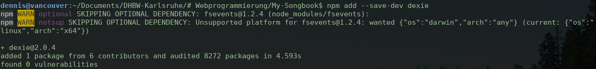
Installation von dexie
Anschließend musst du im Projektverzeichnis der App eine Datei mit dem Namen
.babelrc anlegen. Sie muss folgenden Inhalt besitzen,
damit die von Dexie zurückgelieferten, asynchronen
Promise-Objekte
auch mit Parcel funktionieren:¹
¹
Wir arbeiten dadurch um eine Art Bug in Parcel herum. Dafür wird auch das Paket
babel-plugin-transform-runtime benötigt.
Dadurch stehen dir dann folgende Möglichkeiten in JavaScript zur Verfügung:
// Dexie-Klasse importieren
import Dexie from "dexie/dist/dexie.js";
// Neue Datenbank mit zwei Tabellen definieren
// ++id definiert ein automatisch hochgezähltes Schlüsselfeld.
// Es müssen nur Felder angegeben werden, für die ein Index benötigt wird.
let database = new Dexie("My-Songbook");
database.version(1).stores({
users: "++id, username",
songtexts: "++id, artist, title",
});
// Neuen Datensatz anlegen
database.songtexts.add({
artist: "Queen",
title: "I Want To Break Free",
format: "html",
data: "… HTML-String …",
});
// Vorhandenen Datensatz aktualisieren
database.songtexts.put({
id: 4711,
artist: "Joe Cocker",
title: "I Come In Peace",
format: "html",
data: "… HTML-String …",
});
// Vorhandenen Datensatz einlesen
let song = await database.songtexts.get(815);
// Vorhandenen Datensatz löschen
database.songtexts.delete(721);
// Alle vorhandenen Datensätze löschen
database.songtexts.clear();
// Vorhandene Einträge anhand einer Filter-Funktion durchsuchen
// (als Alternative zu den eingebauten WHERE-Bedinungen von Dexie)
// und das Ergebnis als Array zurückliefern
let songs = await database.songtexts
.filter(entry => entry.artist.toLowerCase().search("queen") >= 0)
.toArray();
Darüber hinaus bietet Dexie noch einiges mehr, was wir in der Besipielanwendung
allerdings nicht benötigen. Weitere Informationen bietet die
API-Beschreibung auf der Webseite.
Kapselung der der Datenbankzugriffe
Aus Gründen der Übersichtlichkeit wollen wir auch hier das Single-Responsibility-Prinzip
anwenden und alle Datenbankzugriffe in einer eigenen Klasse kapseln, anstatt sie über den
gesamten Quellcode zu verteilen. Zwar ist die Dexie-API an und für sich bereits relativ
einfach, wir können dadurch den Quellcode aber noch übersichtlicher machen und uns auch
ein Stück weit von der API abschirmen, so dass wir sie im Zweifellsfall später relativ
einfach ersetzen könnten. Lege daher eine neue Datei mit dem Namen
src/database.js und folgendem Inhalt an:
"use strict";
import Dexie from "dexie/dist/dexie.js";
// Datenbankdefinition:
//
// * ++id = Automatisch Hochgezählter Datenbankschlüssel
// * artist, title = Indexfelder für WHERE-Abfragen und die Sortierung
// * Alle anderen Felder müssen nicht deklariert werden!
// * Vgl. http://dexie.org/docs/API-Reference
let database = new Dexie("My-Songbook");
database.version(1).stores({
songtexts: "++id, artist, title",
});
/**
* Datenbankzugriffsklasse für Songtexte. Diese Klasse bietet verschiedene
* Methoden, um Songtexte zu speichern und wieder auszulesen. Im Hintergrund
* wird hierfür Dexie zur lokalen Speicherung im Browser genutzt.
*/
class Songtexts {
}
export default
database,
Songtexts,
};
Diese Klasse wollen wir nun nach und nach um alle benötigten Methoden erweitern.
Zunächst um eine Funktion zum Speichern neuer Songtexte:
/**
* Einen neuen Songtext speichern oder einen vorhandenen Songtext
* aktualisieren. Das Songtext-Objekt sollte hierfür folgenden Aufbau
* besitzen:
*
* {
* artist: "Name des Künstlers",
* title: "Name des Songs",
* format: "html",
* data: "HTML-String",
* }
*
* @param {Object} songtext Zu speichernder Songtext
* @return {Promise} Asynchrones Promise-Objekt
*/
async saveNew(songtext) {
return database.songtexts.add(songtext);
}
Dann um eine Funktion zum erneuten Speichern eines vorhandenen Songtexts:
Dann um zwei Funktionen zum Löschen von Songtexten:
/**
* Vorhandenen Songtext anhand seiner ID löschen.
* @param {String} id ID des zu löschenden Songtexts
* @return {Promise} Asynchrones Promise-Objekt
*/
async delete(id) {
return database.songtexts.delete(id);
}
/**
* Löscht alle Songtexte!
* @return {Promise} Asynchrones Promise-Objekt
*/
async clear() {
return database.songtexts.clear();
}
Sowie eine Funktion, um einen Songtext direkt auszulesen:
/**
* Vorhandenen Songtext anhand seiner ID auslesen.
* @param {String} id ID des zu lesenden Songtexts
* @return {Promise} Asynchrones Promise-Objekt mit dem Songtext
*/
async getById(id) {
return database.songtexts.get(id);
}
Und eine Funktion, die uns entweder alle Songtexte oder alle Texte
anhand eines bestimmten Suchbegriffs zurückliefert:
/**
* Gibt eine Liste mit allen Songtexten zurück, deren Titel oder Künstler
* den gesuchten Wert enthalten.
*
* @param {String} query Gesuchter Titel oder Künstler
* @return {Promise} Asynchrones Promise-Objekt mit dem Suchergebnis
*/
async search(query) {
if (!query) query = "";
query = query.toUpperCase();
let result = database.songtexts.filter(songtext => {
let artist = songtext.artist.toUpperCase();
let title = songtext.title.toUpperCase();
return artist.search(query) > -1 || title.search(query) > -1;
});
return result.toArray();
}
Die fertige Klasse sollte danach ungefähr so aussehen:
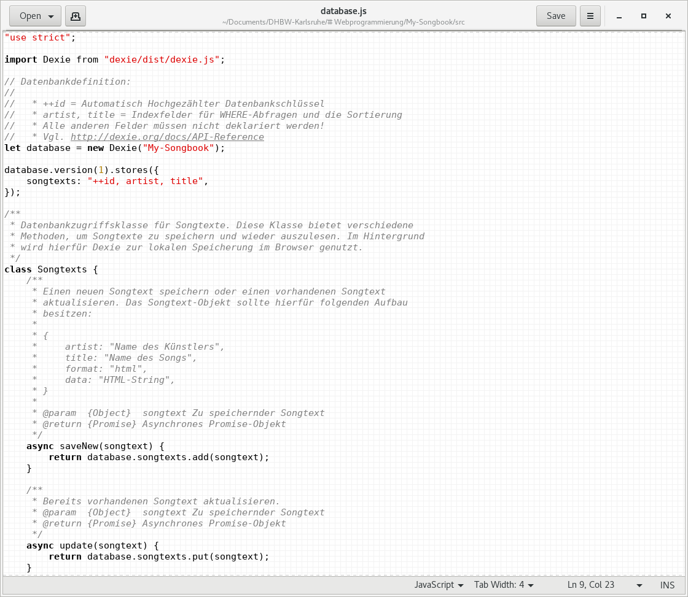
Quellcode der fertigen Songtexts-Klasse
Ein kleiner Test vorab
Um die Funktionsweise der neuen Klasse zu testen, wollen wir etwas Testcode in die
App einbauen, der beim Aufruf der Übersichtsseite ausgeführt wird. Hierfür müssen wir
die Datei src/song-overview/song-overview.js zunächst um
folgenden Import erweitern:
import Database from "../database.js";
Den Testcode können wir dann einfach in den Konstruktor einbauen. Dabei wollen wir
nicht alle Methoden konsequent durchtesten. Wir wollen nur ein paar Testdaten anlegen
und in der Konsole beobachten, was dabei passiert. Ändere die Konstruktor daher wie
folgt ab. Später werden wir den Testcode wieder entfernen.
constructor(app) {
this._app = app;
// Test der Datenbankklasse für Songtexte
let test = async () => {
let songtexts = new Database.Songtexts();
await songtexts.clear();
let songs = await songtexts.search();
console.log("Alle Songs:", songs);
if (songs.length === 0) {
console.log("Bisher noch keine Songs vorhanden, lege deshalb Testdaten an");
await Promise.all([
songtexts.saveNew({
artist: "Queen",
title: "I Want To Break Free",
format: "html",
data: "HTML-Code für <b>I Want To Break Free</b> von <b>Queen</b>",
}),
songtexts.saveNew({
artist: "Queen",
title: "Radio Ga Ga",
format: "html",
data: "HTML-Code für <b>Radio Ga Ga</b> von <b>Queen</b>",
}),
songtexts.saveNew({
artist: "Michael Jackson",
title: "Billie Jean",
format: "html",
data: "HTML-Code für <b>Billie Jean</b> von 6lt;b>Michael Jackson</b>",
}),
]);
let songs = await songtexts.search();
console.log("Gespeicherte Songs:", songs);
}
songs = await songtexts.search("queen");
console.log('Suche nach dem Begriff "queen":', songs);
}
test();
// Ende des Testcodes
}
Beim Start der Anwendung sollte dann folgendes Ergebnis in der Browserkonsole protokolliert werden:
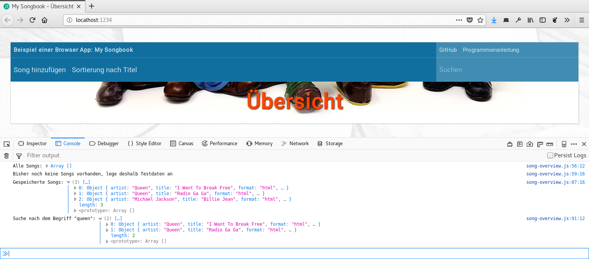
Protokollausgabe des Testcodes. Man sieht schön, wie die gespeicherten Objekte aufgebaut sind.
Wie du anhand des Quellcodes erkennen kannst, kannst du mit await
das Ergebnis einer asynchronen Methode abwarten. Das wird an dieser Stelle benötigt, da
die Aufrufe von Dexie den Aufrufer nicht blockieren sondern nur dazu führen, dass die
gewünschte Datenbankänderung im Hintergrund ausgeführt wird. Das funktioniert allerdings
nur, wenn die rufende Methode mit async gekennzeichnet wurde,
da JavaScript den Programmfluss sonst nicht unterbrechen kann, um ohne den Browser zu
blockieren auf die Antwort zu warten. Dabei führt jedes await
zu einer Unterbrechung, bis das gewünschte Ergebnis zur Verfügung steht. Soll allerdings
nicht auf jedes Ergebnis nacheinander sondern gleichzeitig gewartet werden (das Programm
soll dann erst weiterlaufen, wenn alle Ergebnisse vorliegen, unabhängig von der Reihenfolge),
kann das mit await Promise.all([ ... ]) erreicht werden.
An dieser Stelle ist noch etwas mehr Hintergrundwissen erforderlich, was es mit den
asynchronen Methoden von Dexie und unserer Datenbankklasse auf sich hat. Dazu musst
du wissen, dass es in JavaScript keine Threads wie in anderen Programmiersprachen
gibt, mit denen nebenläufige Programmflüsse realisiert werden können. Stattdessen gibt
es (stark vereinfacht gesagt) nur einen Hauptthread, in dem zu verschiedenen Zeitpunkten
wirklich alles passiert, was der Browser macht:¹
Das Einlesen und Auswerten des HTML-Codes
Das Nachladen von Stylesheets, Bildern und JavaScript-Dateien
Die Ausführung des JavaScript-Codes
Die Darstellung der Webseite auf dem Bildschirm
¹
Theoretisch kann es zwar vorkommen, dass ein bestimmter Browser die genannten Aktionen
in mehreren Threads nebenläufig ausführt. Dies ist dann aber ein Implementierungsdetail
des jeweiligen Browsers und kann mit JavaScript nicht beeinflusst werden. Die Sprache
JavaScript kennt das Konzept von Threads nicht.
Als Folge daraus kann lang laufender JavaScript-Code die gesamte Browser-Performance
verschlechtern oder den Browser gar komplett einfrieren. Da JavaScript anfangs aber nur
für kleine Codeschnippsel in ansonsten völlig statischen HTML-Dateien gedacht war, wurde
bei der Definition der Sprache zunächst kein Wert auf Performance oder Nebenläufigkeit
gelegt. Erst in jüngerer Zeit hat sich dies verändert, sodass JavaScript inzwischen
zwar immer noch keine Threads, dafür aber folgende Konzepte der nebenläufigen Programmierung
kennt:
Web Worker:
Funktionieren ähnlich wie Threads, indem sie es erlauben, eine Quelldatei mit Javascript-Code
nachzuladen, der im Hintergrund unabhängig vom Hauptthread ausgeführt wird.
Promises:
Erlauben es, eine einzelne Funktion im Hintergrund auszuführen, ohne dass hierfür eine eigene Codedatei
vom Server abgerufen werden muss. Ähnlich zu einem Event Handler kann eine Callback-Funktion registriert
werden, die nach Abschluss der Hintergrundaktion im Hauptthread ausgeführt wird.
Asynchrone Funktionen:
Stellen eine syntaktische Vereinfachung dar, um einen Quellcode, in dem viel mit Promises gearbeitet wird,
einfacher zu strukturieren. Eine asynchrone Funktion wird immer im Hintergrund ausgeführt, ohne dass hierfür
explizit ein Promise-Objekt erzeugt werden muss.
Web Worker werden für die Arbeit mit Dexie nicht benötigt. Promises und asynchrone Methoden jedoch schon,
weshalb wir sie uns hier ein wenig genauer anschauen wollen. Zunächst einmal wollen wir dabei zeigen,
wie (ohne Verwendung asyonchroner Funktionen) ein Promise-Objekt erzeugt werden kann, um eine Aktion
im Hintergrund auszuführen:
let promise = new Promise((resolve, reject) => {
// Hier musst du dir eine lange Berechnung denken, die möglicherweise
// den Browser einfrieren könnte. Sie liefert als Ergebnis die Zahl 42.
// Manchmal läuft sie aber auch auf einen Fehler. Zur Sicherheit läuft
// sie im Hintergrund.
if (new Date().getSeconds() % 2) {
resolve(42);
} else {
reject("Fehler: Aufruf in ungeraden Sekunden nicht erlaubt!");
}
});
Wie du siehst, muss einfach nur ein Promise-Objekt erzeugt und
diesem die im Hintergrund auszuführende Funktion übergeben werden. Die Funktion kann dabei
bis zu zwei Parameter besitzen, über die ein Ergebnis oder eine Fehlermeldung an den
Hauptthread zurückgegeben werden kann. Hierfür kann der Hauptthread mehrere Callbacks
registrieren, die nach Abschluss der Hintergrundaktion ausgeführt werden:
promise.then(ergebnis => {
// Diese Funktion wird im Hauptthread ausgeführt und bekommt
// den Wert aus der obigen resolve()-Zeile übergeben.
alert(`Das Ergebnis lautet ${ergebnis}.`);
}).catch(fehler => {
// Diese Funktion wird auch im Hauptthread ausgeführt. Sie
// bekommt den Wert aus der obigen reject()-Zeile übergeben.
alert(fehler);
});
Je nach aktueller Sekunde zeigt der obige Code die Zahl 42 oder einen Fehler.
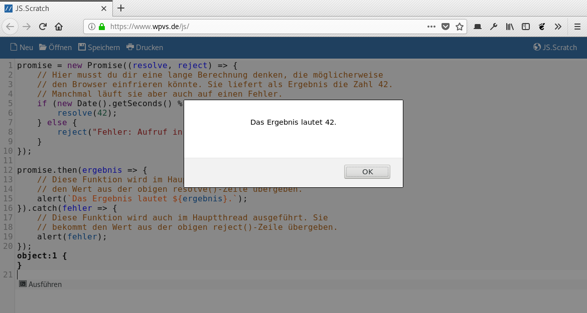
Karlsruhe, 23:36:00: Die Frisur hält!
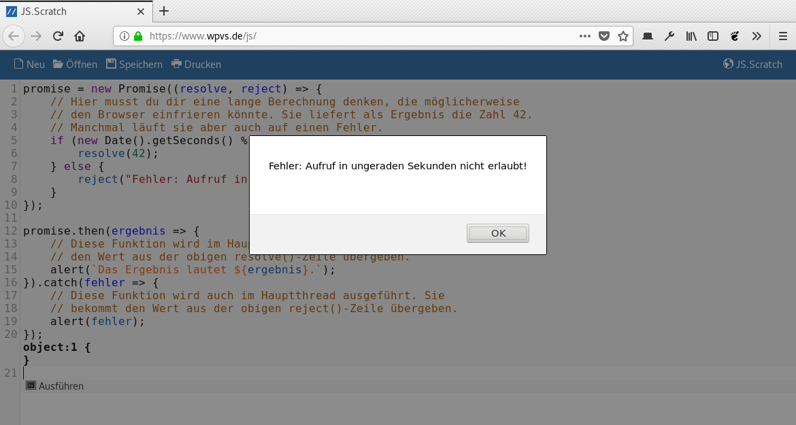
Mannheim, eine Sekunde später: Der Code läuft auf einen Fehler.
Nebenläufigkeit in JavaScript: Teil 2
Im Grunde genommen lassen sich auf die eben gezeigte Weise beliebige, langläufige
Aktionen, wie das Speichern von Daten in einer Datenbank, in den Hintergrund verlagern,
ohne dabei die Performance des Browsers herunterzuziehen. Auch lässt sich auf diese
Weise ganz einfach der Zeitpunkt abfangen, an dem Dexie eine Änderung in der Datenbank
auch wirklich ausgeführt hat, da Dexie (und auch unsere Database-Klasse)
immer ein Promise-Objekt zurückliefern. Zum Beispiel so:
let songtexts = new Database.Songtexts();
let promise = songtexts.search();
promise.then(songs => {
// Die gesuchten Songs stehen nun zur Verfügung und können
// via DOM-Manipulation angezeigt werden
songs.forEach(song => {
… Songs anzeigen …
});
}).catch(error => {
… Fehlerbehandlung …
});
// ACHTUNG! Während der Code ab dieser Zeile ausgeführt wird,
// läuft der Datenbankzugriff durch Dexie noch. An dieser Stelle
// können wir noch nicht auf das Ergebnis zugreifen. Nur die
// obige Rückruffunktion des Promise-Objekts, die allerdings
// erst irgendwann später aufgerufen wird, bekommt das gewünschte
// Ergebnis übergeben
… Sonstiger Quellcode …
Gerade, wenn man viele Datenbankzugriffe hintereinander ausführen will, kann das
schnell unübersichtlich werden. Mit Hilfe des Schlüsselworts await
lässt sich der Code jedoch ganz einfach schreiben:
async function searchAndDisplaySongs() {
try {
let songtexts = new Database.Songtexts();
let songs = await songtexts.search();
songs.forEach(song => {
… Songs anzeigen …
});
} catch (error) {
… Fehlerbehandlung …
}
}
searchAndDisplaySongs();
Dieser Code bewirkt exakt das Gleiche, kommt aber völlig ohne Callbacks aus!
Stattdessen wird der Code bei der await-Anweisung
einfach so lange unterbrochen, bis das von songtexts.search()
zurückgegebene Promise-Objekt entweder ein Ergebnis
oder einen Fehler liefert.
Einen kleinen Nachteil hat das Schlüsselwort await allerdings,
weshalb es nicht in jeder Situation genutzt werden kann. Es darf nur innerhalb einer
Funktion verwendet werden, die mit async als asynchrone Funktion
gekennzeichnet wurde, weshalb der Aufruf oben in die Funktion
searchAndDisplaySongs() verschoben wurde. Außerhalb einer solchen
Funktion führt await zu einem Syntaxfehler und damit zu einem
kompletten Abbruch des JavaScript-Codes!
Der Grund dafür liegt, wie so oft, in der Abwärtskompatibilität von JavaScript. Früher
gab es das Schlüsselwort await nicht, so dass es eine große
Anzahl von produktivem JavaScript-Code gibt, der sich möglicherweise falsch verhält,
wenn er für eine nicht genau vorhersagbare Zeit unterbrochen und erst später wieder
fortgeführt wird. Also musste man sich eine neue Syntax einfallen lassen, die ganz klar
kennzeichnet, wenn eine Funktion prinzipiell unterbrechbar ist. Ein viel wichtiger Grund
ist jedoch, wie async und await technisch
realisiert wurden:
async: Sorgt dafür, dass der gesamte Code der hiermit
gekennzeichneten Funktion immer im Hintergrund ausgeführt wird und die Funktion
deshalb ein Promise-Objekt zurückliefert.
await: Unterbricht die aktuelle Hintergrundfunktion, um auf
das Ende einer anderen Hintergrundfunktion zu warten.
Unser Einführungsbeispiel von ganz oben lässt sich deshalb mit async
wie folgt vereinfachen, bewirkt aber exakt dasselbe wie in der alten Version:
let beispiel = async () => {
// Hier musst du dir eine lange Berechnung denken, die möglicherweise
// den Browser einfrieren könnte. Sie liefert als Ergebnis die Zahl 42.
// Manchmal läuft sie aber auch auf einen Fehler. Zur Sicherheit läuft
// sie im Hintergrund.
if (new Date().getSeconds() % 2) {
return 42;
} else {
throw "Fehler: Aufruf in ungeraden Sekunden nicht erlaubt!";
}
};
Diese Funktion liefert implizit immer ein Promise als
Ergebnis zurück, weshalb das zweite Beispiel im Grunde genommen unverändert
weiter funktioniert:
let promise = beispiel();
promise.then(ergebnis => {
// Diese Funktion wird im Hauptthread ausgeführt und bekommt
// den Wert aus der obigen resolve()-Zeile übergeben.
alert(`Das Ergebnis lautet ${ergebnis}.`);
}).catch(fehler => {
// Diese Funktion wird auch im Hauptthread ausgeführt. Sie
// bekommt den Wert aus der obigen reject()-Zeile übergeben.
alert(fehler);
});
Mit await lässt sich aber auch dies vereinfachen, wie
wir ja schon gesehen haben:
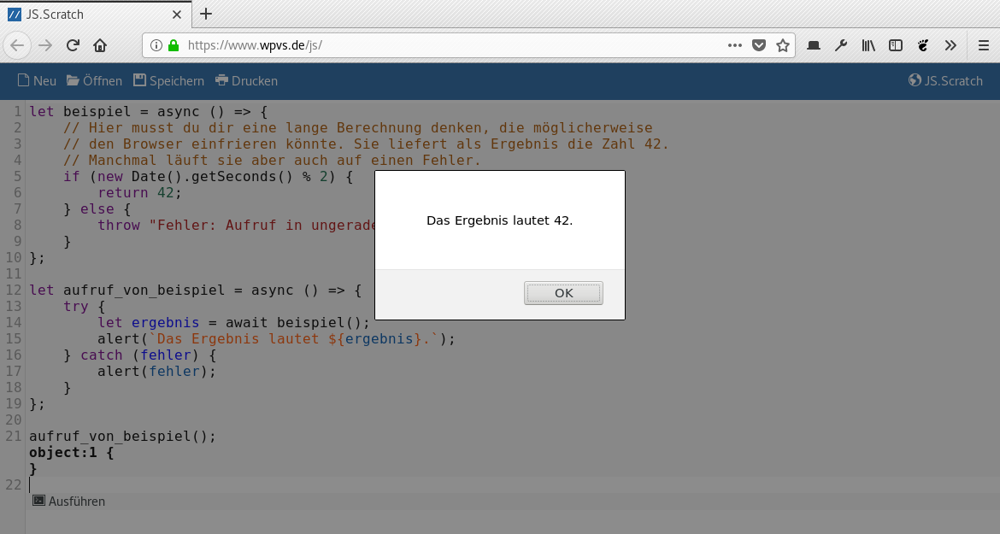
Auch hier bekommen wir mal ein Ergebnis …
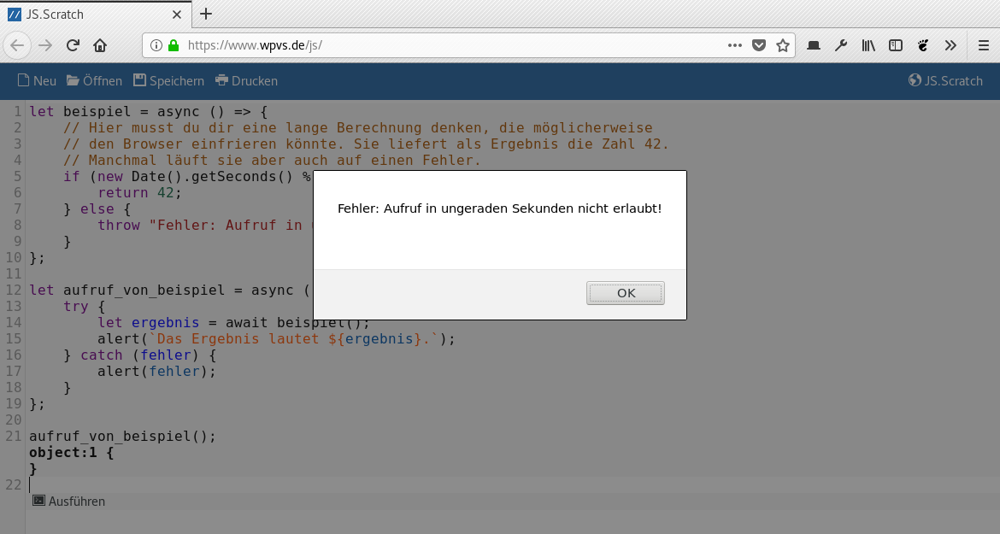
… und mal die Fehlermeldung.
Ausbauen des Testcodes
Mit soviel theoretischem Hintergrundwissen im Hinterkopf wird es nun Zeit, unseren
Testcode aus der Klasse SongOverview wieder auszubauen.
Wenn er wenigstens einmal ausgeführt wurde, brauchen wir ihn ab jetzt nicht mehr.
Öffne daher die Datei src/song-overview/song-overview.js
und ersetze den Konstruktor wieder durch seine alte Version:
constructor(app) {
this._app = app;
}
Bevor du den Code entfernst, schaue ihn dir aber nochmal ganz genau an. Du solltest
jetzt in der Lage sein zu verstehen, wofür die ganzen async,
await und Promise.all() benötigt werden.
Asynchrone Methodenaufrufe während der Navigation erlauben
Wenn wir nun gleich die Übersichtsseite ausprogrammieren wollen, um dort alle in der
Datenbank gespeicherten Songs anzuzeigen, müssen wir in der Lage sein, innerhalb der
onShow()-Methode der Klasse SongOverview
unsere asynchronen Datenbankmethoden aufzurufen und dabei auf das Ergebnis der
Datenbankanfrage zu warten, bevor wir es zur Anzeige bringen. Dank unserem neuen Wissen
über Promises kein Problem, schöner wäre es jedoch, wenn wir auch hier das Schlüsselwort
await verwenden könnte, um den Quellcode zu vereinfachen.
Zunächst müssen wir die Methoden onShow() und onLeave()
daher zu asynchronen Methoden machen, indem wir ihnen das Schlüsselwort await
vorne anstellen. Rufe daher die beiden Dateien src/song-overview/song-overview.js
und src/song-display-edit/song-display-edit.js auf und ändere die beiden Methoden
entsprechend ab:
Dadurch wird dann eine Anpassung an der Klasse App
in der Datei src/app.js notwendig, in der wir die
Methode _switchVisibleView() austauschen müssen:
async _switchVisibleView(view) {
// Callback, mit dem die noch sichtbare View den Seitenwechsel zu einem
// späteren Zeitpunkt fortführen kann, wenn sie in der Methode onLeave()
// false zurückliefert. Dadurch erhält sie die Möglichkeit, den Anwender
// zum Beispiel zu fragen, ob er ungesicherte Daten speichern will,
// bevor er die Seite verlässt.
let newUrl = this._router.lastRouteResolved().url;
let goon = () => {
// ?goon an die URL hängen, weil der Router sonst nicht weiternavigiert
this._router.navigate(newUrl + "?goon");
}
// Aktuelle View fragen, ob eine neue View aufgerufen werden darf
if (this._currentView) {let goonAllowed = await this._currentView.onLeave(goon);if (!goonAllowed) {this._navAborted = true;return false;}}
// Alles klar, aktuelle View nun wechseln
document.title = `${this._title} – ${view.title}`;
this._currentView = view;
this._switchVisibleContent(await view.onShow());
return true;
}
Dadurch sind dann alle Vorbereitungen abgeschlossen, damit wir die Übersichtsseite
nun ausprogrammieren können. Auch wenn die Änderung selbst nur sehr klein war,
verstehst du jetzt wenigstens, was sie bewirkt und warum wir sie benötigen.
An dieser Stelle wird es nun Zeit, den Dummy-Inhalt der App wieder zu entfernen und
durch richtigen Inhalt zu ersetzen. Öffne daher die Datei src/app.css
und entferne folgenden Bereich:
Stattdessen bauen wir in die src/index.html folgenden
neuen Inhalt an, damit wir uns an das Stylehsset für die Übersichtsseite machen
können. Auch dieser Inhalt verschwindet gleich wieder, zunächst benötigen wir
ihn aber, um die Stylesheets schreiben zu können.
<!-- ====================== -->
<!-- View: Vorhandene Songs -->
<!-- ====================== -->
<section id="song-overview" class="hidden">
<!-- Topbar -->
<header>
Diesen Inhalt nicht ändern!
</header>
<!-- Hauptbereich -->
<main>
<ul>
<li>
<div class="padding no-data">
Noch keine Texte vorhanden
</div>
</li>
<li data-section-title="A">
<div class="section-title">
A
</div>
</li>
<li class="entry" data-song-title="Another Day In Paradise" data-song-artist="Phil Collins">
<div class="song-title">
Another Day In Paradise
</div>
<div class="song-artist">
Phil Collins
</div>
</li>
<li class="entry" data-song-title="Another One Bites The Dust" data-song-artist="Queen">
<div class="song-title">
Another One Bites The Dust
</div>
<div class="song-artist">
Queen
</div>
</li>
<li data-section-title="B">
<div class="section-title">
B
</div>
</li>
<li class="entry" data-song-title="Bennie And The Jets" data-song-artist="Elton John">
<div class="song-title">
Bennie And The Jets
</div>
<div class="song-artist">
Elton John
</div>
</li>
</ul>
</main>
</section>
Anstelle des alten Inhalts zeigen wir nun eine Liste der vorhandenen Songtexte an.
Wie du siehst, spielt sich alles in einem <ul>-Element
ab, wobei es verschiedene Listeneinträge gibt. Der Eintrag, wenn noch keine Songtexte
vorhanden sind, sieht so aus:
<li>
<div class="padding no-data">
Noch keine Texte vorhanden
</div>
</li>
Zwischenüberschriften sehen so aus:
<li data-section-title="A">
<div class="section-title">
A
</div>
</li>
Und die eigentlichen Songtexte sehen so aus:
<li class="entry" data-song-title="Another Day In Paradise" data-song-artist="Phil Collins">
<div class="song-title">
Another Day In Paradise
</div>
<div class="song-artist">
Phil Collins
</div>
</li>
Auf diese Struktur können wir nun zugreifen, um das Stylesheet zu schreiben. Doch zuvor
benötigen wir noch ein paar weitere Variablen in der Datei src/theme.css.
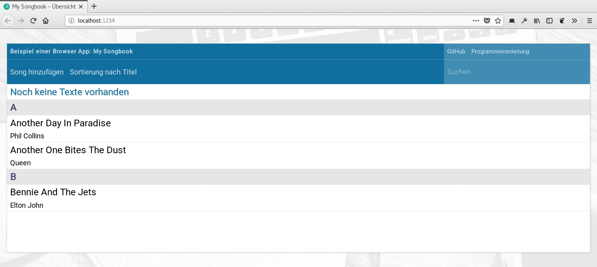
Das fertige Layout der Übersichtsseite (hier noch mit statischem Inhalt)
Einträge aus der Datenbank lesen und anzeigen
Das sieht ja schon ganz gut aus. Jetzt soll der Inhalt aber auch aus der Datenbank kommen.
Der eben noch in die src/index.html eingefügte HTML-Code reduziert
sich deshalb nun zu folgenden paar Zeilen. Es kommt alles weg bis auf die Liste selbst
dargestellt durch das <ul>-Element.
Weiter geht es in der Datei src/song-overview/song-overview.js,
in der wir zwei neue Methoden zum Lesen der Songs aus der Datenbank und zur Anzeige
der gefundenen Einträge benötigen. Die Methode zum Lesen der Songs sieht wie folgt aus.
Sie ist im Grunde genommen ganz einfach, durch den umfangreichen Kommentar am Anfang
und die Vergleichsfunktion zum Sortieren der Songs wirkt sie allerdings größer, als sie
in Wirklichkeit ist.
/**
* Diese Methode greift auf die Datenbank zu und sucht die gespeicherten
* Songs. Optional kann ein Suchbegriff mitgegeben werden, der innerhalb
* des Songtitels oder des Künstlernamens vorkommen muss. Ebenso kann
* einer von folgenden Werten mitgegeben werden, um die Ergebnisliste zu
* sortieren:
*
* * "title": Sortierung nach Songtitel und Künstler
* * "artist": Sortierung nach Künstler und Songtitel
*
* Die Ergebnisliste hat folgendes Format:
*
* [
* {
* id: "Datenbank-ID", // Schlüsselwert der Datenbank
* artist: "Name des Künstlers", // Name des Künstlers
* title: "Name des Songs", // Name des Songs
* format: "html", // Bisher immer "html"
* data: "HTML-String", // HTML-String mit Songinhalt
* }, {
* …
* }
* ]
*
* @param {String} query Suchbegriff (optional)
* @param {String} sort Sortierung (optional)
* @return {Array} Liste der gefundenen Songs
*/
async _searchSongs(query, sort) {
// Songs suchen
let songtexts = new Database.Songtexts();
let songs = await songtexts.search(query);
// Ergebnis sortieren
songs.sort((lhs, rhs) => {
let resultArtist = lhs.artist.localeCompare(rhs.artist);
let resultTitle = lhs.title.localeCompare(rhs.title);
if (sort === "artist") {
// Sortierung nach Künstler und Songtitel
if (resultArtist != 0) {
return resultArtist;
} else {
return resultTitle;
}
} else {
// Sortierung nach Songtitel und Künstler
if (resultTitle != 0) {
return resultTitle;
} else {
return resultArtist;
}
}
});
return songs;
}
Die Methode zur Ausgabe der gefundenen Songs in der HTML-Oberfläche ist allerdings
tatsächlich etwas länglich, weil wir hier relativ viele DOM-Objekte erzeugen und
aufrufen müssen, um den dynamischen HTML-Code zu generieren. In den späteren Teilen
der Anleitung werden wir diesen Code deshalb nochmal überarbeiten.
/**
* Diese Methode nimmt die von searchSongs() generierte Liste mit Songtexten
* entgegen und zeigt sie auf der Seite an. Hierfür muss der Methode über
* den Parameter groupBy einer von folgenden beiden Strings mitgegeben
* werden:
*
* * "title": Gruppierung anhand erstem Buchstaben des Titels
* * "artist": Gruppierung anhand des Künstlers
*
* Im Parameter parentNode muss das <ul>-Element übergeben werden, in
* welches die Listeneinträge eingefügt werden sollen.
*
* @param {Array} songs Liste der darzustellenden Songs
* @param {String} groupBy Kriterium für die Zwischenüberschriften
* @param {HTMLNode} parentNode <ul>-Element der Liste
*/
_renderList(songs, groupBy, parentNode) {
parentNode.innerHTML = "";
if (songs.length < 1) {
// Hinweistext, wenn noch keine Songs vorhanden sind
parentNode.innerHTML += `
<li>
<div class="padding no-data">
Noch keine Texte vorhanden
</div>
</li>
`;
} else {
// Zwischenüberschriften und Songtexte
let currentGroup = "";
songs.forEach(song => {
// Zwischenüberschrift zur Gruppierung der Songs
//
// <li data-section-title="A">
// <div class="section-title">
// A
// </div>
// </li>
let songGroup1 = "";
let songGroup2 = "";
if (groupBy === "title") {
songGroup1 = song.title.trim()[0].toUpperCase();
songGroup2 = songGroup1;
} else {
songGroup1 = song.artist.trim();
songGroup2 = songGroup1.toUpperCase();
}
if (currentGroup != songGroup2) {
currentGroup = songGroup2;
let liGroup = document.createElement("li");
liGroup.dataset.sectionTitle = songGroup1;
let divGroup = document.createElement("div");
divGroup.classList.add("section-title");
divGroup.textContent = songGroup1;
parentNode.appendChild(liGroup);
liGroup.appendChild(divGroup);
}
// Der eigentliche Song
//
// <li class="entry" data-song-title="Another Day In Paradise" data-song-artist="Phil Collins">
// <div class="song-title">
// Another Day In Paradise
// </div>
// <div class="song-artist">
// Phil Collins
// </div>
// </li>
let liSong = document.createElement("li");
liSong.classList.add("entry");
liSong.dataset.songTitle = song.title.trim();
liSong.dataset.songArtist = song.artist.trim();
let divTitle = document.createElement("div");
divTitle.classList.add("song-title");
divTitle.textContent = song.title.trim();
let divArtist = document.createElement("div");
divArtist.classList.add("song-artist");
divArtist.textContent = song.artist.trim();
parentNode.appendChild(liSong);
liSong.appendChild(divTitle);
liSong.appendChild(divArtist);
});
}
}
Jetzt müssen wir die beiden Methoden nur noch an der richtigen Stelle aufrufen,
um etwas auf dem Bildschirm zu sehen. Die Methode onShow()
ist genau der richtige Ort dafür, da wir die Songliste beim Aufruf der Seite lesen
und auf den Bildschirm bringen wollen. Ändere die onShow()-Methode
daher wie folgt ab:
Und schon sollte sich dir folgendes Bild bieten. Vorausgesetzt natürlich, dass
die Testeinträge noch in deiner lokalen Datenbank enthalten sind. Sollten keine
Einträge zu sehen sein, baue nochmal den Testcode zu ihrer Erzeugung ein und
stelle sicher, dass in der Browserkonsole keine Fehlermeldungen entstehen.
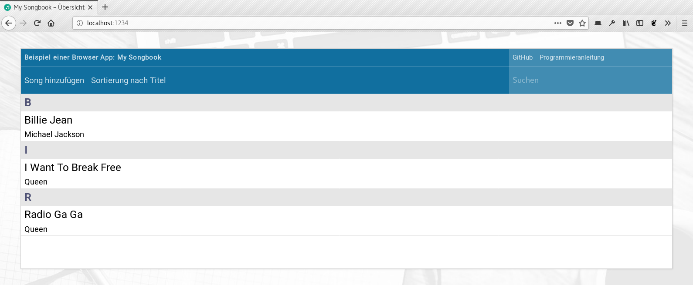
Sieht fast gleich aus, die Einträge kommen jetzt aber aus der Datenbank.
Nachdem die Darstellung der Songliste nun funktioniert, wird es Zeit, die
Sortier- und Suchfunktion auszuprogrammieren. Zuvor wollen wir uns aber noch
einem kleinen Usability-Problem annehmen. Und zwar dem Kopfbereich, der in der
mobilen Ansicht zwar gut zu bedienen ist, dafür aber viel zu viel Platz einnimmt.
Im folgenden Screenshot sieht man, dass auf einem Smartphone fast die halbe
Bildschirmhöhe verloren geht:
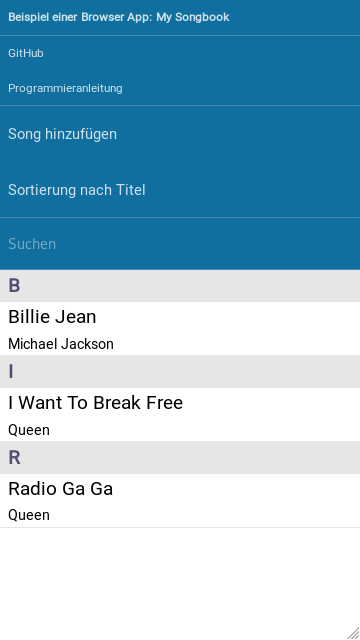
Der Kopfbereich belegt fast den halben Bildschirm
Die Lösung des Problems ist im Grunde genommen ganz einfach, erfordert an dieser
Stelle aber ein wenig Programmierarbeit: Wir benötigen ein
Hamburger-Menü.
So soll die fertige Lösung daher aussehen:
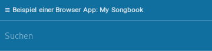
Anfangs ist das Menü zugeklappt.
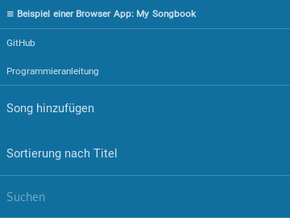
Bei Klick auf das Symbol erscheint die volle Auswahl.
Zunächst müssen wir das Hamburger-Icon im HTML-Code definieren, was mit folgender
kleinen Anpassung in src/index.html gelingt. Gleichzeitig
fügen wir dem umgebenden <div> noch zwei CSS-Klassen
hinzu, auf die wir mit JavaScript gleich zugreifen werden.
<section id="app">
…
<div class="item hamburger-menu menu-closed">
<b>
<span class="menu-icon">≡</span>
Beispiel einer Browser App: My Songbook
</b>
</div>
…
</section>
Zusätzlich kennzeichnen wir die auf dem Smartphone zunächst auszublendenden Menüpunkte
mit der CSS-Klasse menu-content:
Damit ist der HTML-Code schon auf das neue Menü vorbereitet. Allerdings
brauchen wir das Hamburger-Icon nur in der Smartphone-Ansicht, da auf
großen Bildschirmen alles beim Alten bleiben soll. Folgende Zeilen in
src/app.css reichen dafür schon aus:
/*
* Anpassung an große Bildschirme, sobald in der index.css das große
* Hintergrundbild eingeschaltet wird
*/
@media screen and (min-width: 85em) {
…
/* Menü-Icon ausblenden */
#app header .menu-icon {
display: none;
}
…
}
Die einzelnen Menüpunkte werden wir zur Laufzeit durch Hinzufügen der CSS-Klasse
hidden ausblenden. Diese ist bereits im Stylesheet
src/index.css definiert, muss aber noch um den Zusatz
!important ergänzt werden:
.hidden {
display: none !important;
}
Fehlt nur noch das dazugehörige JavaScript. Dieses fügen wir am Ende des
Konstruktors der Klasse App, also in der Datei
src/app.js ein. Los geht's mit einem Event Handler,
der das Menü bei Klick auf die Titelzeile auf- und zuklappt:
class App {
/**
* Konstruktor.
*/
constructor() {
…
// Hamburger-Menü für kleine Bildschirme ermöglichen
let menuButton = document.querySelector("header .hamburger-menu");
menuButton.addEventListener("click", () => {
// Nur auf kleinen Bildschirmen auf den Klick reagieren
if (menuButton.classList.contains("inactive")) return;
// Sichtbarkeit des Menüs umschalten
let menuState = "menu-open";
if (menuButton.classList.contains("menu-open")) menuState = "menu-closed";
menuButton.classList.remove("menu-open");
menuButton.classList.remove("menu-closed");
menuButton.classList.add(menuState);
// Menüeinträge ein-/ausblenden
document.querySelectorAll("header .menu-content").forEach(element => {
if (menuState === "menu-open") {
element.classList.remove("hidden");
} else {
element.classList.add("hidden");
}
});
});
}
…
}
In der ersten Zeile holen wir uns das <div> mit dem Titel
in des Hamburger-Icons. Für dieses wird dann ein Event Listener registriert, der bei jedem
Mausklick (bzw. Touchdruck) auf das Event feuert. Innerhalb der Funktion passiert dann
folgendes:
Zunächst wird geprüft, ob die Titelzeile die CSS-Klasse inactive
besitzt. Sie ist bisher noch nicht gesetzt, wird später aber immer dann zugewiesen,
wenn die Anwendung in der vollen Ansicht für große Bildschirme dargestellt wird. Ist dies
der Fall, kann die Funktion direkt wieder verlassen werden.
Anschließend wird geprüft, ob das <div> die CSS-Klassen
menu-open oder menu-closed besitzt,
je nachdem, ob das Menü aktuell auf- oder zugeklappt ist. Der dabei gefundene Wert wird
dann durch den jeweils anderen Wert ersetzt.
Zum Schluss werden die einzelnen Menüpunkte in Abhängigkeit des eben ermittelten Wertes
ein- oder ausgeblendet. Dies erfolgt durch Zuweisung der CSS-Klasse hidden,
die in der Datei src/index.jss definiert ist.
Jetzt muss nur noch der Hovereffekt für die Titelzeile auf großen Bildschirmen
unterbinden und sichergestellt werden, dass das Menü in der Smartphone-Ansicht
zunächst immer ausgeblendet ist. Außerdem wollen wir das Menü automatisch
automatisch aktivieren, wenn sich die Größe des Browserfensters ändert und die
gesamte Ansicht auf den Smartphone-Modus wechselt. Direkt nach dem oben gezeigten
JavaScript-Code (immer noch im Konstruktor der Klasse App)
muss daher folgender Code eingefügt werden. Der Quellcode sollte an dieser Stelle
ziemlich selbsterklärend sein:
class App {
/**
* Konstruktor.
*/
constructor() {
… Code von eben …
let _initHamburgerMenu = () => {
// Menübutton auf großen Bildschirmen inaktiv schalten
// Klasse .inactive für das Element mit .hamburger-menu setzen
let menuIcon = document.querySelector("header .menu-icon");
let largeScreen = true;
if (getComputedStyle(menuIcon).display === "none") {
menuButton.classList.add("inactive");
} else {
menuButton.classList.remove("inactive");
largeScreen = false;
}
// Menüeinträge auf kleinen Bildschirmen anfangs ausblenden
// und auf großen Bildschirmen immer anzeigen
document.querySelectorAll("header .menu-content").forEach(element => {
if (largeScreen) {
element.classList.remove("hidden");
} else {
element.classList.add("hidden");
}
});
};
window.addEventListener("resize", () => {
_initHamburgerMenu();
});
_initHamburgerMenu();
}
…
}
Aktuell wird die Songliste auf der Übersichtsseite immer nach Titel sortiert
angezeigt. Bei vielen Einträgen ist es aber manchmal besser, die Einträge
nach Künstler zu sortieren, oder einen gewünschten Song einfach mal schnell
suchen zu können. Beides wollen wir deshalb nun ausprogrammieren, wobei wir
wie immer mit ein paar kleinen Anpassungen am HTML-Code in
src/index.html beginnen.
…
<section id="song-overview" class="hidden">
<!-- Topbar -->
<header>
<div class="left menu-content">
<div class="item">
<a href="/song/new/" data-navigo>
Song hinzufügen
</a>
</div>
<div class="item cmd-sort" data-sort-by="title">
<a>
Liste nach Titel sortieren
</a>
</div>
<div class="item cmd-sort" data-sort-by="artist">
<a>
Liste nach Künstler sortieren
</a>
</div>
</div>
<div class="right">
<input class="search" placeholder="Suchen" />
</div>
</header>
…
</section>
…
Auf diese Weise haben wir nun zwei Menüpunkte zum Ändern der Sortierung.
Mit JavaScript werden wir dann sicherstellen, dass immer nur einer davon
angezeigt wird, je nachdem wonach die Liste zuletzt sortiert wurde.
Außerdem hat das Suchfeld nun noch eine CSS-Klasse bekommen, durch dies
einfacher in JavaScript angesprochen werden kann. Wollen wir die entsprechenden
deshalb gleich mal Anpassungen anschauen. Es beginnt mit ein paar Hilfsvariablen
im Konstruktor der Klasse SongOverview in der
Datei src/song-overview/song-overview.js:
In der Methode onShow() entfernen wir die vier Zeilen in der Mitte,
die sich um den Aufruf der beiden anderen Methoden _searchSongs()
und _renderList kümmern, so dass nur noch die erste Zeile und die
return-Anweisung am Ende übrig bleiben. Stattdessen fügen wir folgende
Zeilen ein:
Wir rufen also nun die neue Methode _searchAndUpdateView()
auf, die wie folgt am Ende der Klasse eingefügt werden kann:
/**
* Diese Methode umhüllt die beiden Methoden _searchSongs() und
* _renderList(), um die Liste der darzustellenden Songs zu ermitteln
* und anzuzeigen. Dabei werden auch die anderen Inhalte der Seite
* wie die Toolbar oder das Suchfeld aktualisiert.
*
* @param {String} query Suchbegriff
* @param {String} sort Sortierung und Gruppierung
*/
async _searchAndUpdateView(query, sort) {
// Songs suchen und anzeigen
this._query = query;
this._sort = sort;
let songs = await this._searchSongs(query, sort);
this._renderList(songs, sort, this._listElement);
// Sortierbuttons in der Toolbar umschalten
this._sortButtons.forEach(element => {
if (element.dataset.sortBy === sort) {
element.classList.add("hidden");
} else {
element.classList.remove("hidden");
}
});
// Text im Suchfeld aktualisieren
if (!this._searchField.value === query) {
this._searchField.value = query;
}
}
Funktional hat sich dadurch erst mal nichts verändert. Wir haben jedoch eine
wunderbare All-In-One-Methode, die immer dafür sorgt, dass alle UI-Elemente
korrekt dargestellt werden, wenn wir die Sortierung ändern oder eine Suche
ausführen. Hier werden zum Beispiel die Buttons zum Sortieren der Liste ein-
und ausgeblendet, je nachdem, welche Sortierung gerade aktiv ist. Aktuell ist
das noch fest-verdrahtet die Sortierung nach Titel. Wir können nun aber ganz
einfach einen Event Handler einbauen, um dies zu ändern. Hierzu gehen wir
wieder in die Methode onShow() zurück und fügen vor
den return-Anweisung folgende Zeilen hinzu:
async onShow() {
… bisherigen Code bitte stehen lassen …
// Event Listener zum Sortieren der Liste
this._sortButtons.forEach(element => {
element.addEventListener("click", event => {
this._searchAndUpdateView(this._query, element.dataset.sortBy);
event.preventDefault();
});
});
return …
}
Wir müssen innerhalb des Event Listeners tatsächlich nur die neue Methode
_searchAndUpdateView() aufrufen und ihr im zweiten
Parameter den Namen der Sortierspalte mitgeben. Praktischerweise haben wir
diesen in einem data-Attribut bereits im HTML-Code
hinterlegt, so dass hier nur der Attribut weitergereicht werden muss.
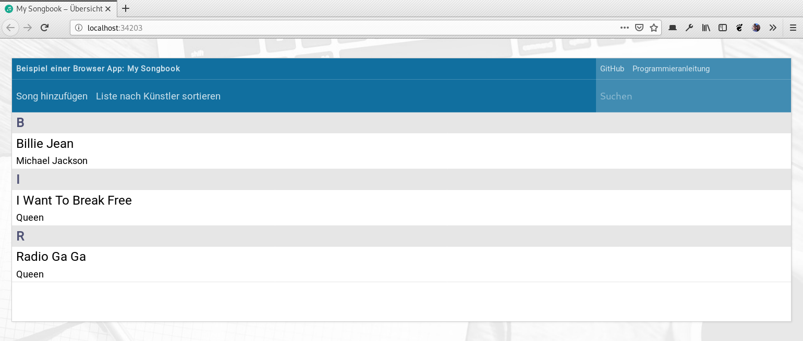
Kennen wir schon: Die Sortierung nach Titel
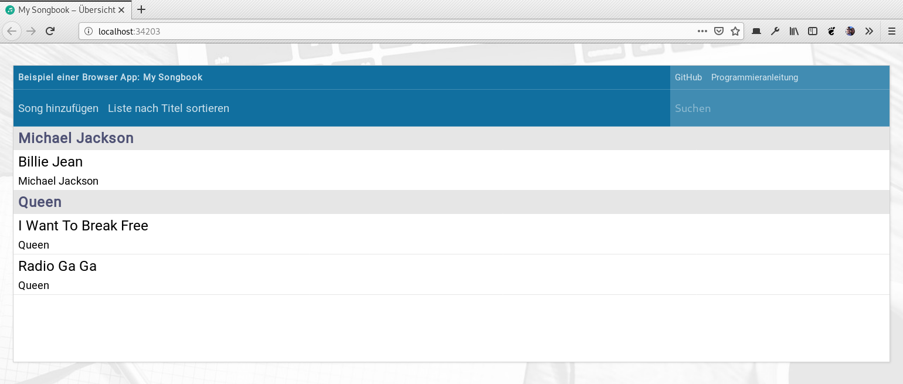
Es geht aber auch anders: Hier sortiert nach Künstler
Die Suche funktioniert jetzt dann genau so einfach. Wir müssen einfach an
derselben Stelle wie eben einen weiteren Event Handler einbauen. Diesen
programmieren wir so, dass nach jedem Tastendruck spätestens nach einer
halben Sekunde die Suche ausgeführt wird, stellen dabei aber sicher, dass
die zeitversetzte Suche nur dann vorgemerkt wird, wenn es nicht bereits
ohnehin eine Vormerkung gibt. Bei Enter wollen
wir die Suche außerdem direkt ausführen und eine eventuell bestehende
Vormerkung verwerfen. Der JavaScript-Code hierfür sieht so aus:
async onShow() {
… bisherigen Code bitte stehen lassen …
// Event Listener zum Suchen von Songs
this._searchField.addEventListener("keyup", event => {
if (event.key === "Enter") {
// Bei Enter sofort suchen
this._searchAndUpdateView(this._searchField.value, this._sort);
if (this._searchTimeout) {
window.clearTimeout(this._searchTimeout);
this._searchTimeout = null;
}
} else {
// Bei sonstigem Tastendruck nur alle halbe Sekunde suchen
if (!this._searchTimeout) {
this._searchTimeout = window.setTimeout(() => {
this._searchAndUpdateView(this._searchField.value, this._sort);
this._searchTimeout = null;
}, 500);
}
}
});
return …
}
Ohne die automatische Suche nach einer halben Sekunde wäre der Quellcode
natürlich etwas kürzer und übersichtlicher. Wirklich kompliziert ist die
hier gezeigte Version dann aber doch wieder nicht. Gönnen wir dem Anwender
oder der Anwenderin daher den Luxus, auch ohne Enter
zu drücken suchen zu können.